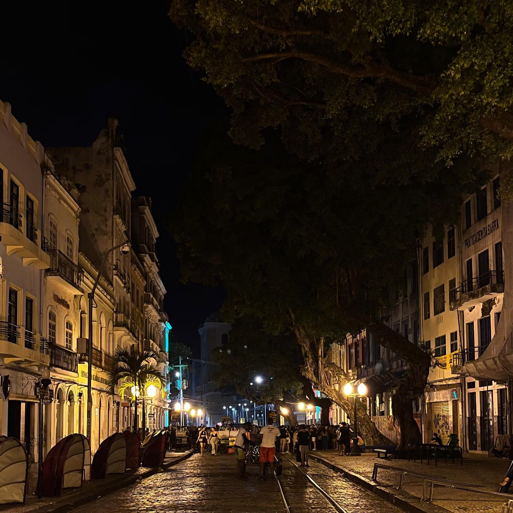
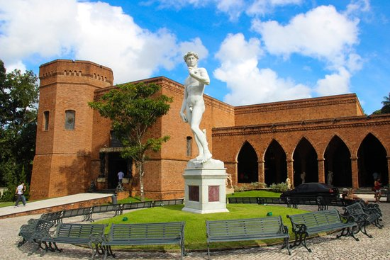

Praia de Boa Viagem
A praia urbana mais famosa do Recife! São 7 km de faixa de areia, coqueiros e calçadão para caminhadas, ciclismo e esportes.
Saiba mais

Rua do Bom Jesus
Uma das ruas mais bonitas do mundo, a Rua do Bom Jesus é famosa por seus casarões coloniais coloridos, bares e galerias de arte.
Saiba mais

Instituto Ricardo Brennand
Um dos museus mais impressionantes do Brasil, com um castelo inspirado na arquitetura medieval. Possui armaduras e espadas.
Saiba mais
Marco Zero
O coração do Recife! O Marco Zero é ponto de encontro de turistas e locais, com a famosa Rosa dos Ventos de Cícero Dias no chão.
Saiba mais
Parque da Jaqueira
Um dos parques mais bonitos do Recife, ótimo para caminhadas, piqueniques e lazer ao ar livre. Tem ciclovia e quadras esportivas.
Saiba mais